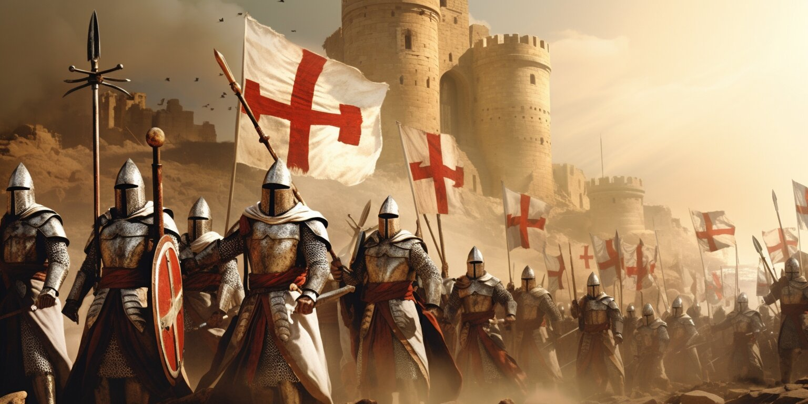

After Christian armies captured Jerusalem from Muslim control in 1099 during the Crusades, groups of pilgrims from across Western Europe started visiting the Holy Land. Many of them, however, were robbed and killed as they crossed through Muslim-controlled territories during their journey.
Around 1118, a French knight named Hugues de Payens created a military order along with eight relatives and acquaintances, calling it the Poor Fellow-Soldiers of Christ and the Temple of Solomon—later known simply as the Knights Templar.
With the support of Baldwin II, the ruler of Jerusalem, they set up headquarters on that city’s sacred Temple Mount, the source of their now-iconic name, and pledged to protect Christian visitors to Jerusalem.
Initially, the Knights Templar faced criticism from some religious leaders. But in 1129, the group received the formal endorsement of the Catholic Church and support from Bernard of Clairvaux, a prominent French abbot. Bernard authored “In Praise of the New Knighthood,” a text that glorified the Knights Templar and bolstered their growth.
In 1139, Pope Innocent II issued a Papal Bull that allowed the Knights Templar special rights. Among them, the Templars were exempt from paying taxes, permitted to build their own oratories and were held to no one’s authority except the Pope’s..
The Knights Templar set up a prosperous network of banks and gained enormous financial influence. Their banking system allowed religious pilgrims to deposit assets in their home countries and withdraw funds in the Holy Land.
The order became known for its austere code of conduct (which included no pointy shoes and no kissing their mothers, rules outlined in “The Rule of the Templars”) and signature style of dress, which featured a white habit emblazoned with a simple red cross.
Members swore an oath of poverty, chastity and obedience. They weren’t allowed to drink, gamble or swear. Prayer was essential to their daily life, and the Templars expressed particular adoration for the mother of Jesus, the Virgin Mary.
As the Knights Templar grew in size and status, it established new chapters throughout Western Europe. At the height of their influence, the Templars boasted a sizable fleet of ships, owned the Mediterranean island of Cyprus, and served as a primary bank and lending institution to European monarchs and nobles.
Though its original purpose was to protect pilgrims from danger, the Knights Templar progressively expanded its duties. They became defenders of the Crusader states in the Holy Land and were known as brave, highly skilled warriors.
The group developed a reputation as fierce fighters during the Crusades, driven by religious fervor and forbidden from retreating unless significantly outnumbered.
The Templars built numerous castles and fought—and often won—battles against Islamic armies. Their fearless style of fighting became a model for other military orders.
In the late 12th century, Muslim armies retook Jerusalem and turned the tide of the Crusades, forcing the Knights Templar to relocate several times. The Fall of Acre in 1291 marked the destruction of the last remaining Crusader refuge in the Holy Land.
European support for the military campaigns in the Holy Land began to erode over the decades that followed. Additionally, many secular and religious leaders became increasingly critical of the Templars’ wealth and power.
By 1303, the Knights Templar lost its last foothold in the Muslim world and established a base of operations in Paris. There, King Philip IV of France resolved to bring down the order, perhaps because the Templars had denied the indebted ruler additional loans.
On Friday, October 13, 1307, scores of French Templars were arrested, including the order’s grand master Jacques de Molay.
Many of the knights were brutally tortured until they confessed to false charges, which included heresy, homosexuality, financial corruption, devil-worshipping, fraud, spitting on the cross and more.
A few years later, dozens of Templars were burned at the stake in Paris for their confessions. De Molay was executed in 1314.
Under pressure from King Philip, Pope Clement V reluctantly dissolved the Knights Templar in 1312. The group’s property and monetary assets were given to a rival order, the Knights Hospitallers. However, it’s thought by some that King Philip and King Edward II of England seized most of the Knights Templar’s wealth.
The Catholic Church has acknowledged that the persecution of the Knights Templar was unjustified. The church claims that Pope Clement was pressured by secular rulers to destroy the order.
While most historians agree that the Knights Templar fully disbanded 700 years ago, there are some people who believe the order went underground and remains in existence in some form to this day.
In the 18th century, some groups, most notably the Freemasons, revived several of the medieval knights’ symbols, rituals and traditions.
Currently, there are several international organizations styled after the Knights Templar that the public can join. These groups have representatives around the world and aim to uphold the values and traditions of the original medieval order.
Throughout the years, various tales have surfaced about the knights’ mysterious work. More recently, stories about the legendary Templars have found their way into popular books and movies.
Some historians have claimed that the Knights Templar may have secretly guarded the Shroud of Turin (a linen cloth believed to be placed on the body of Jesus Christ before burial) for hundreds of years after the Crusades ended.
Another widespread belief is that the knights discovered and kept religious artifacts and relics, such as the Holy Grail, the Ark of the Covenant and parts of the cross from Christ’s crucifixion.
Various other ideas and myths exist about the Knights Templar’s secret operations. The popular novel and film The Da Vinci Code presents a theory that the Templars were involved in a conspiracy to preserve the bloodline of Jesus Christ.
Although much of these speculations are considered fictional, there’s no question that the Knights Templar have provoked intrigue and fascination and will likely continue to do so for years to come.